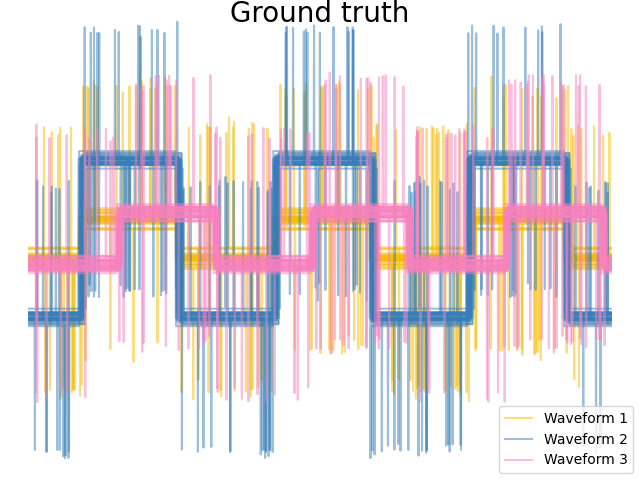
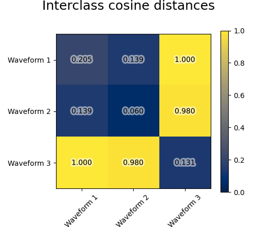

Note
Go to the end to download the full example code or to run this example in your browser via Binder
Agglomerative clustering with different metrics¶
Demonstrates the effect of different metrics on the hierarchical clustering.
The example is engineered to show the effect of the choice of different metrics. It is applied to waveforms, which can be seen as high-dimensional vector. Indeed, the difference between metrics is usually more pronounced in high dimension (in particular for euclidean and cityblock).
We generate data from three groups of waveforms. Two of the waveforms (waveform 1 and waveform 2) are proportional one to the other. The cosine distance is invariant to a scaling of the data, as a result, it cannot distinguish these two waveforms. Thus even with no noise, clustering using this distance will not separate out waveform 1 and 2.
We add observation noise to these waveforms. We generate very sparse noise: only 6% of the time points contain noise. As a result, the l1 norm of this noise (ie “cityblock” distance) is much smaller than it’s l2 norm (“euclidean” distance). This can be seen on the inter-class distance matrices: the values on the diagonal, that characterize the spread of the class, are much bigger for the Euclidean distance than for the cityblock distance.
When we apply clustering to the data, we find that the clustering reflects what was in the distance matrices. Indeed, for the Euclidean distance, the classes are ill-separated because of the noise, and thus the clustering does not separate the waveforms. For the cityblock distance, the separation is good and the waveform classes are recovered. Finally, the cosine distance does not separate at all waveform 1 and 2, thus the clustering puts them in the same cluster.
- 
- 
# Author: Gael Varoquaux
# License: BSD 3-Clause or CC-0
import matplotlib.patheffects as PathEffects
import matplotlib.pyplot as plt
import numpy as np
from sklearn.cluster import AgglomerativeClustering
from sklearn.metrics import pairwise_distances
np.random.seed(0)
# Generate waveform data
n_features = 2000
t = np.pi * np.linspace(0, 1, n_features)
def sqr(x):
return np.sign(np.cos(x))
X = list()
y = list()
for i, (phi, a) in enumerate([(0.5, 0.15), (0.5, 0.6), (0.3, 0.2)]):
for _ in range(30):
phase_noise = 0.01 * np.random.normal()
amplitude_noise = 0.04 * np.random.normal()
additional_noise = 1 - 2 * np.random.rand(n_features)
# Make the noise sparse
additional_noise[np.abs(additional_noise) < 0.997] = 0
X.append(
12
* (
(a + amplitude_noise) * (sqr(6 * (t + phi + phase_noise)))
+ additional_noise
)
)
y.append(i)
X = np.array(X)
y = np.array(y)
n_clusters = 3
labels = ("Waveform 1", "Waveform 2", "Waveform 3")
colors = ["#f7bd01", "#377eb8", "#f781bf"]
# Plot the ground-truth labelling
plt.figure()
plt.axes([0, 0, 1, 1])
for l, color, n in zip(range(n_clusters), colors, labels):
lines = plt.plot(X[y == l].T, c=color, alpha=0.5)
lines[0].set_label(n)
plt.legend(loc="best")
plt.axis("tight")
plt.axis("off")
plt.suptitle("Ground truth", size=20, y=1)
# Plot the distances
for index, metric in enumerate(["cosine", "euclidean", "cityblock"]):
avg_dist = np.zeros((n_clusters, n_clusters))
plt.figure(figsize=(5, 4.5))
for i in range(n_clusters):
for j in range(n_clusters):
avg_dist[i, j] = pairwise_distances(
X[y == i], X[y == j], metric=metric
).mean()
avg_dist /= avg_dist.max()
for i in range(n_clusters):
for j in range(n_clusters):
t = plt.text(
i,
j,
"%5.3f" % avg_dist[i, j],
verticalalignment="center",
horizontalalignment="center",
)
t.set_path_effects(
[PathEffects.withStroke(linewidth=5, foreground="w", alpha=0.5)]
)
plt.imshow(avg_dist, interpolation="nearest", cmap="cividis", vmin=0)
plt.xticks(range(n_clusters), labels, rotation=45)
plt.yticks(range(n_clusters), labels)
plt.colorbar()
plt.suptitle("Interclass %s distances" % metric, size=18, y=1)
plt.tight_layout()
# Plot clustering results
for index, metric in enumerate(["cosine", "euclidean", "cityblock"]):
model = AgglomerativeClustering(
n_clusters=n_clusters, linkage="average", metric=metric
)
model.fit(X)
plt.figure()
plt.axes([0, 0, 1, 1])
for l, color in zip(np.arange(model.n_clusters), colors):
plt.plot(X[model.labels_ == l].T, c=color, alpha=0.5)
plt.axis("tight")
plt.axis("off")
plt.suptitle("AgglomerativeClustering(metric=%s)" % metric, size=20, y=1)
plt.show()
Total running time of the script: (0 minutes 0.746 seconds)